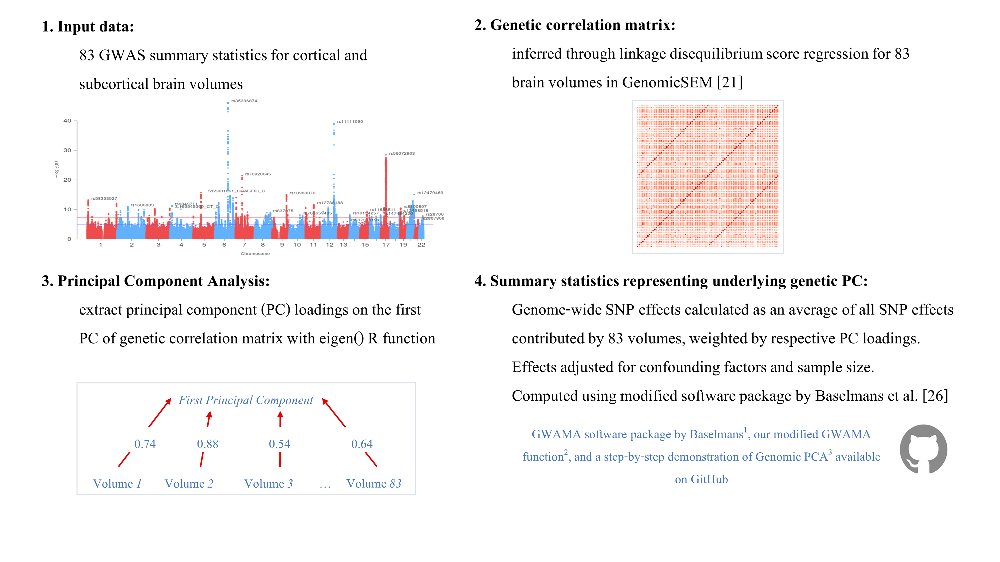
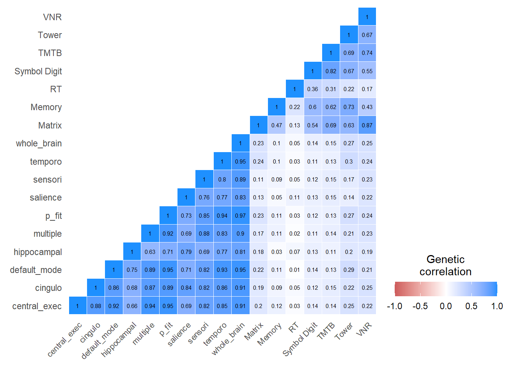
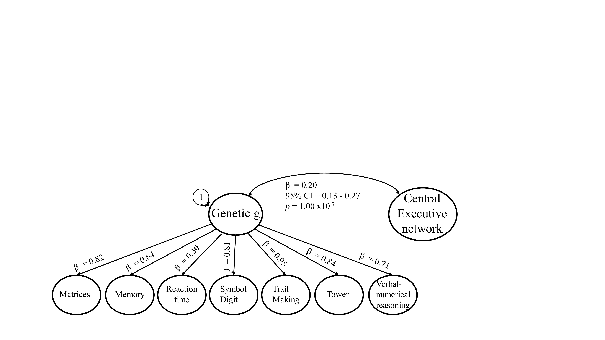
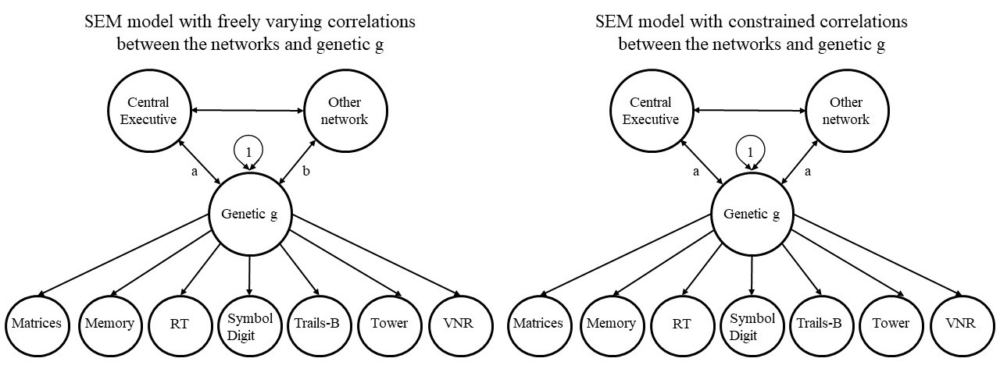
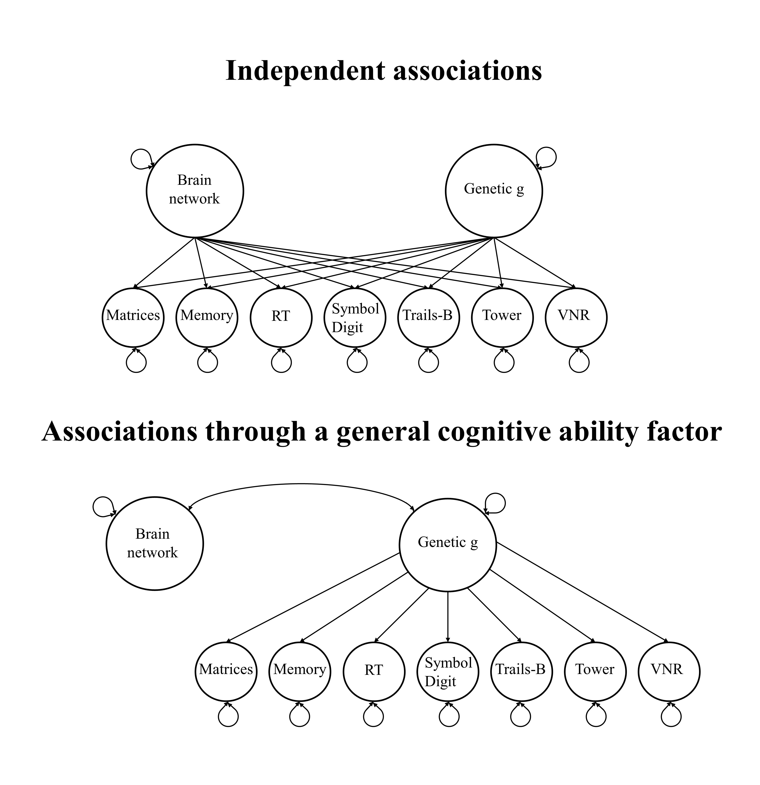

Hypothesis 3
Using genomic structural equation modelling (genomic SEM; Grotzinger et al., 2019), we will extract a latent genetic g factor which represents common genetic variation shared by seven cognitive traits (de la Fuente et al., 2019) and correlate it with brainwide and network-specific genetic indices. As brain volumes and intelligence genetically overlap, we hypothesise that the genetic whole-brain scores positively correlate with genetic g. Additionally, we hypothesise, on the basis of previous phenotypic findings, that the central executive network shows a stronger genetic correlation than other networks, when accounting for the number of included nodes.
Calculate PC sumstats

1. Format GWAS as expected by GWAMA software
The following code relates to step 4 in the illustration above.
##### format GWAS files for GWAMA
# documentation of the Baselman function
# https://github.com/baselmans/multivariate_GWAMA/blob/master/README.md
# required format (same column names, same order):
# SNPID = RS number
# CHR = chromosome
# BP = base pair
# EA = effect allele
# OA = other allele
# EAF = frequency effect allele
# N = sample size
# Z = z-score
# P = p-value
#___________________________________________________________________________________________________________________________________
## this script will only consider Hapmap3 SNPs in already munged files
#load dependencies
library(data.table)
library(stringr)
library(R.utils)
## read in one original gwas for extra info on BP, CHR, P
# both OAFREQ and SE should not change even when flipping the effects when A1 and EA don't match
setwd("~/output/regenie/step2/")
ref_files<-list.files(pattern="GWAS_22chr_noTBVcontrol_")
if(length(ref_files)!=83){print("Detected the wrong number of reference files");break}else{print("As expected, we have 83 reference files")}
# read in munged gwas files that were used in the PC analyses
setwd("~/output/genetic_networks_project/gwas_munged/")
munged_files<-list.files(pattern=".sumstats.gz")
if(length(munged_files)!=83){print("Detected the wrong number of munged files");break}else{print("As expected, we have 83 munged files")}
all_files<-data.frame(munged_files, ref_files)
print(all_files)
for (i in 1:nrow(all_files)){
print(paste0("Now processing ",i,"st/nd/th trait"))
### test if matched munged and ref files are for same phenotype
ref_trait<-str_remove(all_files$ref_files[i], pattern="GWAS_22chr_noTBVcontrol_")
ref_trait<-str_remove(ref_trait, pattern=".txt")
munged_trait<-str_remove(all_files$munged_files[i], pattern=".sumstats.gz")
print(ref_trait)
print(munged_trait)
if(munged_trait != ref_trait){print("Munged trait and reference trait don't match");break}else{print("Munged and reference input files match")}
# read in file
setwd("~/output/genetic_networks_project/gwas_munged/")
munged_file<-fread(as.character(all_files$munged_files[i]),header=T,data.table=F)
# read in reference file
setwd("~/output/regenie/step2/")
ref_file<-fread(as.character(all_files$ref_files[i]),header=T,data.table=F)
# format ref file
names(ref_file)[which(names(ref_file)=="ID")]<-"SNP"
names(ref_file)[which(names(ref_file)=="GENPOS")]<-"BP"
names(ref_file)[which(names(ref_file)=="CHROM")]<-"CHR"
names(ref_file)[which(names(ref_file)=="EAFREQ")]<-"EAF_prelim"
# only keep relevant columns from the reference file
ref_file<-ref_file[,c("BP","CHR","SNP","P","EA","EAF_prelim")]
# merge munged and ref file
merged_file<-merge(munged_file, ref_file, by=c("SNP"), all.x=T)
# create an effect allele frequency column that matches the allele used in the munged file (because we take the frequency from the reference file that might have flipped effect and other alleles)
merged_file$EAF<-ifelse(merged_file$A1 == merged_file$EA, merged_file$EAF_prelim, 1-merged_file$EAF_prelim)
# only keep required columns
names(merged_file)[which(names(merged_file) == "SNP")]<-"SNPID"
merged_file<-merged_file[,c("SNPID","CHR","BP","A1","A2","EAF","N","Z","P")]
# name according to GWAMA expectations
# In genomicSEM A1 is the effect allele
names(merged_file)[which(names(merged_file) == "A1")]<-"EA"
names(merged_file)[which(names(merged_file) == "A2")]<-"OA"
print(head(merged_file))
## print file
setwd("~/output/genetic_networks_project/GWAMA_format/")
fwrite(merged_file,file=paste0("gwama_format_",ref_trait), quote=FALSE,col.names=TRUE,row.names=F,sep=" ",na="NA")
}2. Create PC sumstats weighted with loadings
### calculate PC summary statistics for whole brain
## challenge make sure the right loadings weight the right file
# load dependencies
source("https://github.com/baselmans/multivariate_GWAMA/blob/master/Test_Data/N_weighted_GWAMA.function.1_2_6.R?raw=TRUE")
library(data.table)
library(stringr)
setwd("~/scripts/genetic_networks_project/gwama/")
source("my_GWAMA_26032020.R")
#### before reading in any files, create a data frame that contains matched file_names, Regions and loadings
# set wd to where GWAMA formatted files are saved
setwd("~/output/genetic_networks_project/GWAMA_format/")
# create vector with file_names
file_names<-list.files(pattern="gwama_format_")
# create vector with Regions
Regions<-str_remove(file_names,pattern=".txt")
Regions<-str_remove(Regions,pattern="gwama_format_")
# combine file_names and Regions in one data.frame
df<-data.frame(cbind(file_names,Regions))
df$file_names<-as.character(df$file_names)
df$Regions<-as.character(df$Regions)
str(df)
# load in loadings (they have been calculated with script: 5Eigendecomp/ eigen_decomposition_18052020.R, and transferred onto server)
setwd("~/data/standardised_loadings/")
networks<-list.files(pattern=".txt")
# exclude whole brain, we are doing it separately because it needs so much memory
networks<-networks[-which(networks == "stand_loadings_whole_brain.txt")]
for(i in networks){
print(i)
loadings<-fread(i,header=T,data.table=F)
print(dim(loadings))
name<-str_replace(i,pattern=".txt",replacement = "")
assign(name,loadings)
}
loadings_all_traits<-ls(pattern="stand_loadings_")
loadings_all_traits<-loadings_all_traits[1:9]
print(loadings_all_traits)
###################### this will also be in the loop
# merge data frames for file_names,Regions,loadings_all_traits
for (i in loadings_all_traits){
# retain only regions for this network that are stored in 1st column of each loadings_all_traits
print(i)
loadings<-get(i)
info<-merge(loadings,df,by="Regions",all.x=T)
print("This is the info data.frame")
print(info) # for central exec we are expecting 8 nodes etc.
# set wd to where GWAMA formatted files are stored
setwd("~/output/genetic_networks_project/GWAMA_format/")
# create list to hold GWASs
num<-nrow(info)
dat<-vector("list",num)
# read in files for brain regions in this network
print("Reading in GWAS files")
for(j in 1:nrow(info)){
print(j)
file<-info$file_names[j]
dat_name<-info$Regions[j]
print(file)
dat[[dat_name]]<-fread(file,header=T,data.table=F)}
dat[sapply(dat,is.null)]<-NULL
order<-info$Regions
dat<-dat[order]
print(str(dat))
####### read in intercepts
print("Reading in intercepts")
network_name<-str_replace(i,pattern="stand_loadings_",replacement="")
network_name<-paste0(network_name,".RData")
print(network_name)
setwd("~/output/genetic_networks_project/ldsc/")
intercept_file<-list.files(pattern=network_name)
#print(intercept_file)
intercept_file<-load(intercept_file)
#print(intercept_file)
# name rows and columns after their corresponding brain regions
dimnames(LDSCoutput$I)[[1]]<-dimnames(LDSCoutput$S)[[2]]
dimnames(LDSCoutput$I)[[2]]<-dimnames(LDSCoutput$S)[[2]]
#print(LDSCoutput$I)
# order intercept matrix in the same order as files were read in
print(order)
intercepts<-LDSCoutput$I[order,order]
if(names(dat) != dimnames(intercepts)[[2]]){print("Intercepts are not in same order as files read in");break}
print(intercepts)
# store stand_loadings and name of the resulting log file in variable
print("These are the standardised loadings for this network")
stand_loadings<-info$stand_loadings
print(stand_loadings)
print("This is the network:")
name<-str_replace(network_name,pattern=".RData",replacement="")
print(name)
# multiply the loadings with -1 for all networks if the median value of the loadings is below 0
median_loadings<-median(stand_loadings)
mean_direction<-sign(median_loadings)
if(mean_direction == -1){
stand_loadings<-stand_loadings*(-1)
} else {
stand_loadings<-stand_loadings}
print(stand_loadings)
setwd("~/output/genetic_networks_project/PC_sumstats/")
print("Starting to create GWAMA scores")
my_GWAMA(x=dat,
cov_Z=intercepts,
h2=stand_loadings,
out=".",
name=name,
output_gz=F,
check_columns=F)
rm(dat)
rm(LDSCoutput)
}
print("Done creating all GWAMA scores, excluding whole brain")Note that same script was used for whole brain, but submitted to the cluster separately because it needed more resources (the GWAMA function reads in all 83 files simultaneously).
3. Format and munge PC sumstats
This step is only performed the get the sumstats in shape, and no SNPs should be excluded because the GWAMA analyses were only performed on SNPs that survived the munging process in the first place.
### Munge the PC_sumstats files and calculate ldsc with the cognitive GWAS files (already munged)
# load dependencies
library(tidyr)
library(stringr)
library(data.table)
library(devtools)
library(GenomicSEM)
# set wd to where formatted files are saved
setwd("~/output/genetic_networks_project/PC_sumstats")
## change header names for PC_sumstats
# read PC_files into R
PC_files<-list.files(pattern="N_weighted_GWAMA.results.txt")
print(PC_files)
for (i in 1:length(PC_files)) assign(PC_files[i],fread(PC_files[i],header=T,data.table=F))
print(ls(pattern="N_weighted_GWAMA.results.txt"))
# read in file that contains info columns
info_file<-fread("~/output/regenie/step2/GWAS_22chr_noTBVcontrol_Right_transverse_temporal.txt",header=T,data.table=F)
names(info_file)[which(names(info_file)=="CHROM")]<-"CHR"
names(info_file)[which(names(info_file)=="GENPOS")]<-"BP"
names(info_file)[which(names(info_file)=="ID")]<-"SNPID"
# rename columns
for (i in PC_files){
file<-get(i)
print(head(file))
names(file)<-c("CPTID","SNPID","CHR","BP","EA","OA","EAF","MAF","N","N_obs","Direction","BETA","SE","Z","P")
print(head(file))
file<-file[,c("SNPID","CHR","BP","EA","OA","MAF","N","BETA","SE","P")]
file<-merge(info_file[,c("CHR","BP","SNPID","INFO")],file, by=c("CHR","BP","SNPID"), all.y=T)
print(head(file))
setwd("~/output/genetic_networks_project/PC_header/")
file_name<-paste0(i,"_ready_to_munge")
file_name<-str_remove(file_name,pattern=".N_weighted_GWAMA.results.txt")
print(file_name)
fwrite(file, file=file_name,quote=FALSE,col.names=TRUE,row.names=F,sep=" ",na="NA")
}
rm(list=ls())
########################
## munge PC sumstats that have been formatted in previous step
# load dependencies
library(tidyr)
library(stringr)
library(data.table)
library(devtools)
library(GenomicSEM)
hm3<-"~/data/w_hm3.noMHC.snplist"
# list PC_sumstats files you want to munge
setwd("~/output/genetic_networks_project/PC_header/")
PC_files<-list.files(pattern="_ready_to_munge")
print(length(PC_files))
# build a data frame that contains information on file_name and corresponding network
network_names<-str_remove(PC_files,pattern="_ready_to_munge")
info<-data.frame(cbind(PC_files,network_names))
info$PC_files<-as.character(info$PC_files)
info$network_names<-as.character(info$network_names)
print(str(info))
for (i in 1:nrow(info)){
setwd("~/output/genetic_networks_project/PC_header/")
files<-info[i,"PC_files"]
print(files)
trait.names<-info[i,"network_names"]
print(trait.names)
munge(files=files,
hm3=hm3,
trait.names=trait.names,
info.filter = 0.9)
}Genetic correlations between network morphology and cognitive traits
#### run ldsc for cognitive traits and all networks included
# load dependencies
library(tidyr)
library(stringr)
library(data.table)
library(devtools)
library(GenomicSEM)
# list munged PC sumstats
setwd("~/output/genetic_networks_project/PC_munged/")
# list files you would like to munge
PC_files<-list.files(pattern=".sumstats.gz")
PC_files<-paste0("~/output/genetic_networks_project/PC_munged/",PC_files)
print(PC_files)
# list cognitive traits
setwd("~/data/cognititve_GWAS")
cognitive_files<-list.files(pattern=".sumstats.gz")
# specify traits used for ldsc
traits<-append(PC_files,cognitive_files)
trait.names<-str_replace(traits,pattern=".sumstats.gz",replacement="")
trait.names<-str_remove(trait.names, pattern="~/output/genetic_networks_project/PC_munged/")
# ld scores and weights previously downloaded (European population)
ld<-"~/data/eur_w_ld_chr/"
wld<-"~/data/eur_w_ld_chr/"
# no sample or population prevalence required: NA for all traits
desired_length<-length(traits)
sample.prev<-rep(NA, desired_length)
population.prev<-rep(NA, desired_length)
LDSCoutput<-ldsc(traits=traits,
ld=ld,wld=wld,
trait.names = trait.names,
ldsc.log="~/output/genetic_networks_project/network_ldsc/ldsc_all_networks_cognitivetraits.log",
sample.prev=sample.prev,
population.prev=population.prev,
stand=T)
save(LDSCoutput, file="~/output/genetic_networks_project/network_ldsc/all_networks_cognitive.RData")
Note the small correlations of reaction time with the networks as well as the other cognitive traits.
Genetic correlations among networks
The genetic networks are very closely correlated, which would explain why there is no evidence for significantly different magnitudes of association between networks and general cognitive ability.
temporarywd<-paste0(workingd,"/data_my_own/ldsc_networks/")
setwd(temporarywd)
load("all_networks_cognitive.RData")
ldscoutput<-LDSCoutput
trait_names<-dimnames(ldscoutput$S)[[2]]
dimnames(ldscoutput$S_Stand)[[1]]<-trait_names
dimnames(ldscoutput$S_Stand)[[2]]<-trait_names
ldscoutput$S_Stand<-round(ldscoutput$S_Stand,digits = 2)
diag(ldscoutput$S_Stand)<-NA
only_networks<-ldscoutput$S_Stand[trait_names[1:10],trait_names[1:10]]
only_networks<-get_lower_tri(only_networks)
only_networks<-reshape2::melt(only_networks)
# only keep non-missing
# we only calculated 10*(10-1)/2=45, all others are redundant
only_networks<-only_networks[which(!is.na(only_networks$value)),]
library(DT)
datatable(only_networks, caption = "Genetic correlations among genetic networks",colnames = c("Network 1","Network 2","rg"), rownames=FALSE,options = list(pageLength=5, scrollX=T))The genetic correlations between the networks range from 0.97 to 0.63 (mean rg 0.83; SD = 0.09). This indicates that the different networks index very similar polygenic signal. The largest genetic correlation of 0.97 was between whole_brain and p_fit. The smallest genetic correlation of 0.63 was between multiple and hippocampal.
Genomic SEM: Genetic intelligence factor g
Here we assess the genetic correlations between network morphology and a factor of general cognitive ability g which is modeled from seven cognitive trait GWAS.
#load dependencies
library(stringr)
library(data.table)
library(devtools)## Error: package or namespace load failed for 'devtools' in loadNamespace(j <- i[[1L]], c(lib.loc, .libPaths()), versionCheck = vI[[j]]):
## namespace 'pkgload' 1.1.0 is being loaded, but >= 1.2.1 is requiredlibrary(GenomicSEM)
# load correlation matrix
temporarywd<-paste0(workingd,"/data_my_own/ldsc_networks/")
setwd(temporarywd)
load("all_networks_cognitive.RData")
ldscoutput<-LDSCoutput
#name the traits accordingly
trait_names<-dimnames(ldscoutput$S)[[2]]
dimnames(ldscoutput$S)[[1]]<-trait_names
dimnames(ldscoutput$S)[[2]]<-trait_names
# list all networks names
network_names<-c("central_exec","cingulo","default_mode","hippocampal","multiple","p_fit","salience","sensori","temporo","whole_brain")
#### genomic SEM
for (i in network_names){
# specify covariance structure of interest
covstruc <- ldscoutput
#specify estimation method
estimation<- "DWLS"
# specify your SEM
network_name<-i
#PC_model<- 'G =~ NA*Matrix+Memory+RT+Symbol Digit+TMTB+Tower+VNR
# G ~~ 1*G
# G ~ central_exec'
PC_model<-paste0("G =~ NA*Matrix+Memory+RT+Symbol Digit+TMTB+Tower+VNR\n\t\t\t\t\t\tG ~~ 1*G \n\t\t\t\t\t\tG ~ ",network_name)
# run your model
SEM_model<-usermodel(covstruc=covstruc, model=PC_model, estimation=estimation, imp_cov=T)
model_name<-paste0(network_name,"_cognitive_SEM_results")
assign(model_name,SEM_model)
}
results<-ls(pattern="_cognitive_SEM_results")Model fit for associations with genetic g
library(knitr)
fit_table<-NULL
for (i in results){
SEM_results<-get(i)
fit_table<-data.frame(rbind(fit_table,SEM_results$modelfit))
}
model<-str_replace(results,pattern="_SEM_results",replacement="")
fit_table$model<-model
#fit_table$p_chisq<-signif(fit_table$p_chisq)
fit_table<-fit_table[,c("model","chisq","df","p_chisq","AIC","CFI","SRMR")]
kable(fit_table,caption="Model fit across models",format="markdown",digits = c(0,2,0,24,2,2,2),row.names = F)| model | chisq | df | p_chisq | AIC | CFI | SRMR |
|---|---|---|---|---|---|---|
| central_exec_cognitive | 142.04 | 20 | 2.0726e-20 | 174.04 | 0.97 | 0.08 |
| cingulo_cognitive | 156.50 | 20 | 3.6000e-23 | 188.50 | 0.96 | 0.08 |
| default_mode_cognitive | 150.83 | 20 | 4.3600e-22 | 182.83 | 0.96 | 0.08 |
| hippocampal_cognitive | 143.69 | 20 | 1.0088e-20 | 175.69 | 0.96 | 0.08 |
| multiple_cognitive | 143.06 | 20 | 1.3289e-20 | 175.06 | 0.97 | 0.08 |
| p_fit_cognitive | 161.08 | 20 | 5.0000e-24 | 193.08 | 0.96 | 0.08 |
| salience_cognitive | 144.92 | 20 | 5.8740e-21 | 176.92 | 0.96 | 0.08 |
| sensori_cognitive | 146.20 | 20 | 3.3420e-21 | 178.20 | 0.96 | 0.08 |
| temporo_cognitive | 165.98 | 20 | 1.0000e-24 | 197.98 | 0.96 | 0.08 |
| whole_brain_cognitive | 157.75 | 20 | 2.0000e-23 | 189.75 | 0.96 | 0.08 |
Genetic correlation between network morphology and a genetic g factor
network_assoc<-NULL
for(i in results){
SEM_results<-get(i)
network_assoc<-rbind(network_assoc,SEM_results$results[2,c("STD_Genotype","STD_Genotype_SE","p_value")])
}
genetic_cor<-data.frame(cbind(model,network_assoc))
##create CI column
genetic_cor$STD_Genotype_SE<-as.numeric(genetic_cor$STD_Genotype_SE)
genetic_cor$ci_u<-genetic_cor$STD_Genotype-(1.96*genetic_cor$STD_Genotype_SE)
genetic_cor$ci_l<-genetic_cor$STD_Genotype+(1.96*genetic_cor$STD_Genotype_SE)
# adjust for multiple testing
genetic_cor$p_adjust<-p.adjust(genetic_cor$p_value,method="fdr",n=nrow(genetic_cor))
# round your numbers
#genetic_cor<-data.frame(lapply(genetic_cor, function(y) if(is.numeric(y)) signif(y) else y))
genetic_cor$STD_Genotype<-round(genetic_cor$STD_Genotype,digits = 2)
genetic_cor$STD_Genotype_SE<-round(genetic_cor$STD_Genotype_SE, digits = 3)
genetic_cor$p_value<-signif(genetic_cor$p_value)
genetic_cor$p_adjust<-signif(genetic_cor$p_adjust)
genetic_cor$ci_l<-round(genetic_cor$ci_l,digits = 2)
genetic_cor$ci_u<-round(genetic_cor$ci_u,digits = 2)
genetic_cor$CI<-with(genetic_cor, paste(ci_u,ci_l,sep = " - "))
genetic_cor<-genetic_cor[,c("model","STD_Genotype","STD_Genotype_SE","CI","p_value","p_adjust")]
kable(genetic_cor,caption="Genetic correlations between PC sumstats and genetic g",format="markdown", row.names = F)| model | STD_Genotype | STD_Genotype_SE | CI | p_value | p_adjust |
|---|---|---|---|---|---|
| central_exec_cognitive | 0.20 | 0.037 | 0.12 - 0.27 | 1.00e-07 | 3.00e-07 |
| cingulo_cognitive | 0.20 | 0.038 | 0.13 - 0.27 | 1.00e-07 | 3.00e-07 |
| default_mode_cognitive | 0.19 | 0.037 | 0.12 - 0.26 | 2.00e-07 | 3.00e-07 |
| hippocampal_cognitive | 0.17 | 0.039 | 0.09 - 0.24 | 2.66e-05 | 2.66e-05 |
| multiple_cognitive | 0.19 | 0.039 | 0.12 - 0.27 | 7.00e-07 | 9.00e-07 |
| p_fit_cognitive | 0.20 | 0.038 | 0.12 - 0.27 | 2.00e-07 | 3.00e-07 |
| salience_cognitive | 0.19 | 0.036 | 0.12 - 0.26 | 3.00e-07 | 4.00e-07 |
| sensori_cognitive | 0.19 | 0.039 | 0.11 - 0.27 | 1.20e-06 | 1.30e-06 |
| temporo_cognitive | 0.20 | 0.038 | 0.12 - 0.27 | 2.00e-07 | 4.00e-07 |
| whole_brain_cognitive | 0.21 | 0.039 | 0.13 - 0.29 | 1.00e-07 | 3.00e-07 |
Note that the adjusted p-values were adjusted using a 5% false discovery rate.

Compare networks based on their correlation magnitudes with general cognitive abilities
Next, we build SEMs to understand whether magnitudes between genetic g and PC sumstats for the Central Executive network are significantly different from the associations between genetic g and the other networks. We do this for raw correlations displayed above, but also for correlations adjusted for the number of nodes contributing to individual networks.

Raw correlations
library(stringr)
library(data.table)
#library(devtools)
library(GenomicSEM)
temporarywd<-paste0(workingd,"/data_my_own/ldsc_networks/")
setwd(temporarywd)
load("all_networks_cognitive.RData")
ldscoutput<-LDSCoutput
#### genomic SEM
# compare central_exec to all other networks
other_networks<-c("cingulo","default_mode","hippocampal","multiple","p_fit","salience","sensori","temporo","whole_brain")
# run constrained model
for(i in other_networks){
# specify covariance structure of interest
dimnames(LDSCoutput$S)[[2]]<-dimnames(LDSCoutput$S)[[2]]
covstruc <- LDSCoutput
#specify estimation method
estimation<- "DWLS"
# specify your constrained model
constrained<-paste0("G =~ NA*Matrix+Memory+RT+Symbol Digit+TMTB+Tower+VNR
G ~~ 1*G
G ~ a*central_exec
G ~ a*",i,"
central_exec ~~ ",i)
# run your constrained model
constrained_model<-usermodel(covstruc=covstruc, model=constrained, estimation=estimation, imp_cov=T)
# save the model under appropriate name
model_name<-paste0("constrained_model_central_exec_",i)
assign(model_name,constrained_model)
# specify your freely-varying model
free<-paste0("G =~ NA*Matrix+Memory+RT+Symbol Digit+TMTB+Tower+VNR
G ~~ 1*G
G ~ central_exec
G ~ ",i,"
central_exec ~~ ",i)
free_model<-usermodel(covstruc=covstruc, model=free, estimation=estimation, imp_cov=T)
model_name<-paste0("free_model_central_exec_",i)
assign(model_name,free_model)
}
results<-ls(pattern="_model_central_exec_")Model fit constrained vs. freely varying models
constrained_results<-ls(pattern="constrained_model_central_exec_")
table<-data.frame()
for (i in constrained_results){
results<-get(i)
names(results$modelfit)<-paste0("constrained_",names(results$modelfit))
table<-rbind(table,results$modelfit)
assign("constrained_table",table)
}
constrained_table$model<-str_replace(constrained_results,pattern="constrained_model_",replacement="")
free_results<-ls(pattern="free_model_central_exec_")
table<-data.frame()
for (i in free_results){
results<-get(i)
names(results$modelfit)<-paste0("free_",names(results$modelfit))
table<-rbind(table,results$modelfit)
assign("free_table",table)
}
free_table$model<-str_replace(free_results,pattern="free_model_",replacement="")
# differences in chi-squared are chi-squared distributed with differences in degrees of freedom and can be checked manually for significance using a chi-squared table
#https://www.psychologie.uzh.ch/dam/jcr:ffffffff-b371-2797-0000-00000fda8f29/chisquare_diff_en.pdf
model_fit_all<-merge(constrained_table,free_table,by="model")
model_fit_all$delta_chisq<-with(model_fit_all, constrained_chisq-free_chisq)
model_fit_all$delta_df<-with(model_fit_all, constrained_df-free_df)
model_fit_all$chi_comp_p<-with(model_fit_all, 1-pchisq(delta_chisq,delta_df))
model_fit_all$comp_p_adjust<-p.adjust(model_fit_all$chi_comp_p,method="fdr",n=nrow(model_fit_all))
display_chi<-model_fit_all[,c("model","delta_chisq","delta_df","chi_comp_p","comp_p_adjust")]
display_fit_other<-model_fit_all[,c("model","constrained_AIC","constrained_CFI","constrained_SRMR","free_AIC","free_CFI","free_SRMR")]
kable(display_chi,caption="Significance test of difference in chi-squared values obtained as model fit in constrained vs. freely varying correlations",format="markdown",digits = c(0,3,0,3,3))| model | delta_chisq | delta_df | chi_comp_p | comp_p_adjust |
|---|---|---|---|---|
| central_exec_cingulo | 0.833 | 1 | 0.361 | 0.675 |
| central_exec_default_mode | -0.173 | 1 | 1.000 | 1.000 |
| central_exec_hippocampal | 1.102 | 1 | 0.294 | 0.675 |
| central_exec_multiple | -0.584 | 1 | 1.000 | 1.000 |
| central_exec_p_fit | 0.786 | 1 | 0.375 | 0.675 |
| central_exec_salience | 0.046 | 1 | 0.831 | 1.000 |
| central_exec_sensori | 0.036 | 1 | 0.850 | 1.000 |
| central_exec_temporo | 0.955 | 1 | 0.328 | 0.675 |
| central_exec_whole_brain | 3.226 | 1 | 0.072 | 0.652 |
kable(display_fit_other,caption = "Other fit indices of constrained vs. freely varying correlations",digits = 2)| model | constrained_AIC | constrained_CFI | constrained_SRMR | free_AIC | free_CFI | free_SRMR |
|---|---|---|---|---|---|---|
| central_exec_cingulo | 209.98 | 0.99 | 0.07 | 211.15 | 0.99 | 0.07 |
| central_exec_default_mode | 198.20 | 0.99 | 0.08 | 200.37 | 0.99 | 0.08 |
| central_exec_hippocampal | 201.57 | 0.97 | 0.07 | 202.47 | 0.97 | 0.07 |
| central_exec_multiple | 199.32 | 0.99 | 0.07 | 201.91 | 0.99 | 0.07 |
| central_exec_p_fit | 217.69 | 1.00 | 0.08 | 218.90 | 1.00 | 0.08 |
| central_exec_salience | 214.19 | 0.98 | 0.07 | 216.15 | 0.98 | 0.07 |
| central_exec_sensori | 204.42 | 0.98 | 0.07 | 206.39 | 0.98 | 0.07 |
| central_exec_temporo | 213.98 | 0.99 | 0.08 | 215.03 | 0.99 | 0.08 |
| central_exec_whole_brain | 218.24 | 0.99 | 0.07 | 217.02 | 0.99 | 0.07 |
Adjusted correlations
To account for different sizes of the networks (i.e. different number of included brain volumes), we compare whether associations with g differ between networks, when the associations have been divided by their number of included volumes.
library(stringr)
library(data.table)
#library(devtools)
library(GenomicSEM)
temporarywd<-paste0(workingd,"/data_my_own/ldsc_networks/")
setwd(temporarywd)
load("all_networks_cognitive.RData")
#### genomic SEM
# compare central_exec to all other networks
other_networks<-c("cingulo","default_mode","hippocampal","multiple","p_fit","salience","sensori","temporo","whole_brain")
# run constrained and freely varying model
for(i in other_networks){
# specify covariance structure of interest
var_names<-str_replace(dimnames(LDSCoutput$S)[[2]],pattern="~/data/PC_munged/",replacement="")
dimnames(LDSCoutput$S)[[2]]<-var_names
covstruc <- LDSCoutput
#specify estimation method
# I would have thought we want to use ML but
# consider Javiers explanation
estimation<- "DWLS"
# specify number of nodes for each network to adjust the correlation
if(i == "cingulo" | i == "salience"){
nodes=10}
else if(i == "default_mode"){
nodes=16}
else if(i == "hippocampal" | i =="multiple" | i == "sensori"){
nodes=12}
else if(i == "p_fit"){
nodes=36}
else if(i == "temporo"){
nodes=30}
else if(i == "whole_brain"){
nodes=83}
else{break}
print(i)
print(nodes)
# specify your constrained model
constrained<-paste0("G =~ NA*Matrix+Memory+RT+Symbol Digit+TMTB+Tower+VNR\nG ~~ 1*G\nG ~ slope_central*central_exec\nG ~ slope_other*",i,"\nslope_central/8 == slope_other/",nodes,"\ncentral_exec ~~ ",i)
#constrained<-paste0("G =~ NA*Matrix+Memory+RT+Symbol Digit+TMTB+Tower+VNR
# G ~~ 1*G
# G ~ slope_central*central_exec
# G ~ slope_other*",i,"
# slope_central/8 = slope_other/",nodes,"
# central_exec ~~ ",i)
print(constrained)
# run your contsrained model
constrained_model<-usermodel(covstruc=covstruc, model=constrained, estimation=estimation, imp_cov=T)
model_name<-paste0("constrained_model_central_exec_",i)
assign(model_name,constrained_model)
# specify your freely-varying model
free<-paste0("G =~ NA*Matrix+Memory+RT+Symbol Digit+TMTB+Tower+VNR
G ~~ 1*G
G ~ central_exec
G ~ ",i,"
central_exec ~~ ",i)
free_model<-usermodel(covstruc=covstruc, model=free, estimation=estimation, imp_cov=T)
model_name<-paste0("free_model_central_exec_",i)
assign(model_name,free_model)
}
results<-ls(pattern="_model_central_exec_")Model fit constrained vs. freely varying models
constrained_results<-ls(pattern="constrained_model_central_exec_")
table<-data.frame()
for (i in constrained_results){
results<-get(i)
names(results$modelfit)<-paste0("constrained_",names(results$modelfit))
table<-rbind(table,results$modelfit)
assign("constrained_table",table)
}
constrained_table$model<-str_replace(constrained_results,pattern="constrained_model_",replacement="")
free_results<-ls(pattern="free_model_central_exec_")
table<-data.frame()
for (i in free_results){
results<-get(i)
names(results$modelfit)<-paste0("free_",names(results$modelfit))
table<-rbind(table,results$modelfit)
assign("free_table",table)
}
free_table$model<-str_replace(free_results,pattern="free_model_",replacement="")
# combine constrained and free models
model_fit_all<-merge(constrained_table,free_table,by="model")
# differences in chi-squared are chi-squared distributed with differences in degrees of freedom
#https://www.psychologie.uzh.ch/dam/jcr:ffffffff-b371-2797-0000-00000fda8f29/chisquare_diff_en.pdf
model_fit_all<-merge(constrained_table,free_table,by="model")
model_fit_all$delta_chisq<-with(model_fit_all, constrained_chisq-free_chisq)
model_fit_all$delta_df<-with(model_fit_all, constrained_df-free_df)
model_fit_all$chi_comp_p<-with(model_fit_all, 1-pchisq(delta_chisq,delta_df))
model_fit_all$comp_p_adjust<-p.adjust(model_fit_all$chi_comp_p,method="fdr",n=nrow(model_fit_all))
display_chi<-model_fit_all[,c("model","delta_chisq","delta_df","chi_comp_p","comp_p_adjust")]
display_fit_other<-model_fit_all[,c("model","constrained_AIC","free_AIC","constrained_CFI","free_CFI","constrained_SRMR","free_SRMR")]
kable(display_chi,caption="Significance test of difference in chi-squared values obtained as model fit in constrained vs. freely varying correlations",format="markdown",digits = c(0,2,0,2,2))| model | delta_chisq | delta_df | chi_comp_p | comp_p_adjust |
|---|---|---|---|---|
| central_exec_cingulo | 0.72 | 1 | 0.40 | 1 |
| central_exec_default_mode | -1.30 | 1 | 1.00 | 1 |
| central_exec_hippocampal | 1.60 | 1 | 0.21 | 1 |
| central_exec_multiple | -1.01 | 1 | 1.00 | 1 |
| central_exec_p_fit | -2.65 | 1 | 1.00 | 1 |
| central_exec_salience | -0.04 | 1 | 1.00 | 1 |
| central_exec_sensori | 0.64 | 1 | 0.42 | 1 |
| central_exec_temporo | -1.61 | 1 | 1.00 | 1 |
| central_exec_whole_brain | -0.44 | 1 | 1.00 | 1 |
kable(display_fit_other,caption = "Other fit indices of constrained vs. freely varying correlations",digits=3)| model | constrained_AIC | free_AIC | constrained_CFI | free_CFI | constrained_SRMR | free_SRMR |
|---|---|---|---|---|---|---|
| central_exec_cingulo | 209.868 | 211.148 | 0.988 | 0.988 | 0.073 | 0.074 |
| central_exec_default_mode | 197.076 | 200.375 | 0.994 | 0.994 | 0.075 | 0.075 |
| central_exec_hippocampal | 202.065 | 202.466 | 0.974 | 0.974 | 0.075 | 0.074 |
| central_exec_multiple | 198.893 | 201.906 | 0.993 | 0.993 | 0.073 | 0.073 |
| central_exec_p_fit | 214.258 | 218.904 | 0.995 | 0.995 | 0.075 | 0.075 |
| central_exec_salience | 214.107 | 216.149 | 0.976 | 0.976 | 0.074 | 0.073 |
| central_exec_sensori | 205.032 | 206.388 | 0.982 | 0.982 | 0.073 | 0.072 |
| central_exec_temporo | 211.416 | 215.028 | 0.988 | 0.988 | 0.077 | 0.077 |
| central_exec_whole_brain | 214.577 | 217.016 | 0.994 | 0.994 | 0.075 | 0.075 |
Calculate genetic correlations between central executive network and specific cognitive abilities
library(stringr)
library(data.table)
#library(devtools)
library(GenomicSEM)
temporarywd<-paste0(workingd,"/data_my_own/ldsc_networks/")
setwd(temporarywd)
load("all_networks_cognitive.RData")
#### genomic SEM
# what's the association between all networks and three cognitive abilities
cognitive_abilities<-c("Matrix","Symbol Digit","Memory")
networks<-c("central_exec","cingulo","default_mode","hippocampal","multiple","p_fit","salience","sensori","temporo","whole_brain")
for(i in networks){
for(j in cognitive_abilities){
# covariance strutcure of interest
covstruc <- LDSCoutput
# estimation method
estimation<- "DWLS"
#specify model
model<-paste0(i," ~~ ",j)
# run model
SEM_model<-usermodel(covstruc=covstruc, model=model, estimation=estimation, imp_cov=T)
# name and save model
model_name<-paste0(i,"_",j,"_indivresults")
assign(model_name,SEM_model)
}}
results<-ls(pattern="_indivresults")There are no fit statistics and zero degrees of freedom because the models are fully saturated.
table<-data.frame()
for (i in results){
cor_results<-get(i)
table<-rbind(table,cor_results$results[2,c("STD_Genotype","STD_Genotype_SE","p_value")])
}
model<-str_replace(results,pattern="_results",replacement="")
table$model<-model
##create CI column
table$STD_Genotype_SE<-as.numeric(table$STD_Genotype_SE)
table$ci_u<-table$STD_Genotype-(1.96*table$STD_Genotype_SE)
table$ci_l<-table$STD_Genotype+(1.96*table$STD_Genotype_SE)
#adjust for multiple testing
table$p_adjust<-p.adjust(table$p_value,method="fdr",n=nrow(table))
# round numbers
table<-data.frame(lapply(table, function(y) if(is.numeric(y)) round(y, 4) else y))
# format CI column
table$CI<-with(table, paste(ci_u,ci_l,sep = " - "))
table<-table[,c("model","STD_Genotype","STD_Genotype_SE","CI","p_value","p_adjust")]
# make model name shorter, delete redundatn info
library(stringr)
table$model<-str_remove(table$model,pattern="_indivresults")
names(table)<-c("model","rg","SE","CI","p_value","p_adjust")
library(DT)
datatable(table, caption = "Genetic correlations between individual networks and specific cognitive abilities", rownames=FALSE,options = list(pageLength=5, scrollX=T))Most genetic associations between the networks and individual cognitive traits were significant.
The following table lists the traits that were non-significantly associated:
## which results were significant?
non_sig_models<-table[which(table$p_adjust>0.05),]
library(tidyr)
non_sig_models<-separate(non_sig_models,col="model",into=c("network","cognitive_trait"),sep = "_")
kable(non_sig_models,row.names = F,caption = "Genetic correlations that were non-significant at an FDR adjusted p-value larger than 5%",digits = 2)| network | cognitive_trait | rg | SE | CI | p_value | p_adjust |
|---|---|---|---|---|---|---|
| cingulo | Matrix | 0.19 | 0.10 | 0.0046 - 0.3768 | 0.04 | 0.06 |
| hippocampal | Matrix | 0.18 | 0.09 | 7e-04 - 0.3693 | 0.05 | 0.06 |
| hippocampal | Memory | 0.03 | 0.04 | -0.0505 - 0.1061 | 0.49 | 0.49 |
| multiple | Matrix | 0.17 | 0.09 | -0.0066 - 0.3416 | 0.06 | 0.07 |
| salience | Matrix | 0.13 | 0.09 | -0.0512 - 0.3065 | 0.16 | 0.17 |
| salience | Memory | 0.05 | 0.04 | -0.0197 - 0.1192 | 0.16 | 0.17 |
| sensori | Matrix | 0.11 | 0.09 | -0.0608 - 0.283 | 0.21 | 0.21 |
Qtrait
The analyses above, aiming to determine contributions of specific cognitive abilities to the genetic associations between general cognitive ability and networks, are somewhat inclusive. Most traits were significantly associated with the networks. We employ a technique called Qtrait heterogeneity index to disentangle whether model fit significantly declines, if the model described above allows for direct associations between the networks and specific cognitive abilities. A significant Qtrait statistic would suggest that model fit significantly declined and that the association of interest is likely driven by specific cognitive abilities, rather than going through the general cognitive ability factor.
In the following, we fit two models as displayed in the figure below, through which we obtain chi-squared fit statistics for each model. The Qtrait heterogeneity index is calculated as the difference between the two fit statistics, and we test whether this difference significantly differs from zero. We repeat this procedure 10 times, once for each network. Qtraits statistics with p-values below 0.05/10 indicate that genetic associations between general cognitive ability and brain networks probably don’t go through the cognitive ability factor, but are driven by variation in specific cognitive traits.

#load dependencies
library(stringr)
library(data.table)
#library(devtools)
library(GenomicSEM)
# load correlation matrix
temporarywd<-paste0(workingd,"/data_my_own/ldsc_networks/")
setwd(temporarywd)
load("all_networks_cognitive.RData")
ldscoutput<-LDSCoutput
trait_names<-dimnames(ldscoutput$S)[[2]]
dimnames(ldscoutput$S)[[1]]<-trait_names
dimnames(ldscoutput$S)[[2]]<-trait_names
# list all networks names
network_names<-c("central_exec","cingulo","default_mode","hippocampal","multiple","p_fit","salience","sensori","temporo","whole_brain")
# build dataframe to hold the Qtrait results
table <- as.data.frame(matrix(nrow = 10, ncol = 4))
names(table)<-c("network","Qtrait","df","pval")
#### genomic SEM
for (i in network_names){
# specify covariance structure of interest
covstruc <- ldscoutput
#specify estimation method
estimation<- "DWLS"
### specify your model that assumes all associations go through genetic g factor
#PC_model<- 'G =~ NA*Matrix+Memory+RT+Symbol Digit+TMTB+Tower+VNR
# G ~~ 1*G
# G ~ central_exec'
factor_model<-paste0("G =~ Matrix+Memory+RT+Symbol Digit+TMTB+Tower+VNR\n\t\t\t\t\t\tG ~ ",network_name)
# run your model
factor_model<-usermodel(covstruc=covstruc, model=factor_model, estimation=estimation, imp_cov=T)
### specify your model that allows specific cognitive traits to be directly associated with network
indep_model<- paste0("G =~ Matrix+Memory+RT+Symbol Digit+TMTB+Tower+VNR
",i," ~ Matrix+Memory+RT+Symbol Digit+TMTB+Tower+VNR")
# run model
indep_model<-usermodel(covstruc=covstruc, model=indep_model, estimation=estimation, imp_cov=T)
diff_chisq <- as.numeric(factor_model$modelfit[3] - indep_model$modelfit[3])
diff_df <- as.numeric(factor_model$modelfit[2] - indep_model$modelfit[2])
qtrait_pval <- 1-pchisq(diff_chisq, diff_df)
# save qtrait results in table
table$network[which(network_names == i)] <- i
table$Qtrait[which(network_names == i)] <- diff_chisq
table$df[which(network_names == i)] <- diff_df
table$pval[which(network_names == i)] <- qtrait_pval
}
table$Qtrait <- signif(table$Qtrait, digits = 2)kable(table,row.names = FALSE,caption = "Qtrait statistics", digits = 24)| network | Qtrait | df | pval |
|---|---|---|---|
| central_exec | -2.1e-19 | 6 | 1 |
| cingulo | -4.7e-20 | 6 | 1 |
| default_mode | -1.8e-19 | 6 | 1 |
| hippocampal | -1.5e-19 | 6 | 1 |
| multiple | -4.9e-20 | 6 | 1 |
| p_fit | -5.9e-20 | 6 | 1 |
| salience | -4.5e-19 | 6 | 1 |
| sensori | -6.0e-20 | 6 | 1 |
| temporo | -5.5e-20 | 6 | 1 |
| whole_brain | -1.0e-19 | 6 | 1 |
This indicates that genetic correlations between general cognitive ability and brain networks are unlikely driven by specific cognitive traits. Allowing the specific traits to directly correlate with a brain network (i.e. not where the correlation goes through the factor) did not increase the model fit. It seems that these associations are not limited to a single measures and are much more general.
Genetic correlation with brain age
Previous research modelling phenotypic canonical networks showed that larger shared morphology within the whole brain (PC loadings) were negatively associated with age sensitivity, even when connectivity measures had been residualised for age [34]. Consequently, the authors suggested that previously described patterns of brain structural aging, a construct labelled as brain age Ref, might not capture how quickly ones regional volumes decline compared to their peers, but rather healthy morphology across the brain. This could vary between people for many non-age-related reasons, including genetic predisposition. Genetic predisposition towards strong whole-brain connectivity might contribute to healthier well-connected brains, that could be more resilient towards harmful environmental factors, properties that should be captured by younger brain age. To test this theory, we calculated genetic correlations between shared morphology across the whole-brain and brain age. Bivariate LDSC was calculated between whole-brain PC summary statistics, created using the methods demonstrated above, and brain age GWAS summary statistics REF.
## this script calculates the genetic correlation between whole brain PC sumstats and brainage gwas
# brain age gwas was downloaded from https://github.com/tobias-kaufmann/brainage/find/master
# fileparts combined using: cat Brainage_GWAS_sumstat_final.gz* > ~/data/brain_age_GWAS/Brainage_GWAS_sumstat_final.gz
# unzipped using gunzip Brainage_GWAS_sumstat_final.gz
# load dependencies
#library(devtools)
library(GenomicSEM)
library(data.table)
#########################
## format brain age file
########################
setwd("~/data/brain_age_GWAS/")
brainage<-fread("Brainage_GWAS_sumstat_final.txt",header=T,data.table=F)
brainage$N<-45615
fwrite(brainage, file="~/data/brain_age_GWAS/brain_age_gwas_header.txt",quote=FALSE,col.names=TRUE,row.names=F,sep=" ",na="NA")
###################
## munge brainage gwas
hm3<-"~/data/w_hm3.noMHC.snplist"
files<-"brain_age_gwas_header.txt"
trait.names<-"brainage"
munge(files=files,
hm3=hm3,
trait.names=trait.names,
info.filter = 0.9)
################################################
### LDSC brain age and whole brain PC
################################################
# specify traits and their location
traits<-c("~/output/genetic_networks_project/brainage/brainage.sumstats.gz","~/output/genetic_networks_project/PC_munged/whole_brain.sumstats.gz")
trait.names<-c("brainage","whole_brain_PC")
# ld scores and weights previously downloaded (European population)
ld<-"~/data/eur_w_ld_chr/"
wld<-"~/data/eur_w_ld_chr/"
# no sample or population prevalence required because they are continuous traits
desired_length<-length(traits)
sample.prev<-rep(NA, desired_length)
population.prev<-rep(NA, desired_length)
LDSCoutput<-ldsc(traits=traits,
ld=ld,wld=wld,
trait.names = trait.names,
ldsc.log="~/output/genetic_networks_project/brainage/whole_brain_vs_brainage.log",
sample.prev=sample.prev,
population.prev=population.prev,
stand=T)
save(LDSCoutput, file="~/output/genetic_networks_project/brainage/whole_brain_vs_brainage.RData")setwd(paste0(workingd,"/data_my_own/brainage"))
load("whole_brain_vs_brainage.RData")
brainage_cor<-round(LDSCoutput$S_Stand[1,2], digits = 2)
k<-nrow(LDSCoutput$S)
SE<-matrix(0, k, k)
SE[lower.tri(SE,diag=TRUE)]<-sqrt(diag(LDSCoutput$V_Stand))
SE_brainage<-round(SE[2,1],digits=3)We found that younger brains were genetically correlated with brains demonstrating higher shared morphology (rg = -0.34; SE = 0.065), indicating that the neurostructural patterns shared by both concepts on a phenotypic level are at least partly governed by polygenic effects of brain health, rather than biological age-specific processes per se.

By Anna Elisabeth Fürtjes
anna.furtjes@kcl.ac.uk